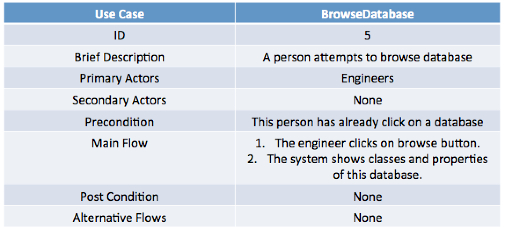
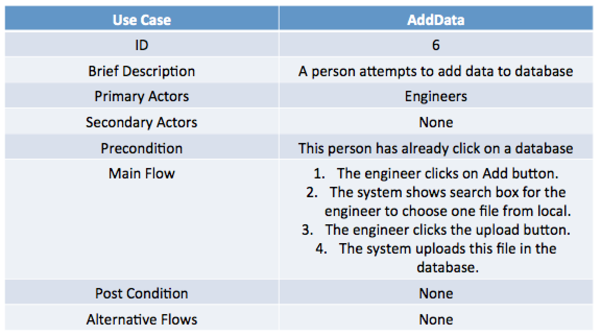
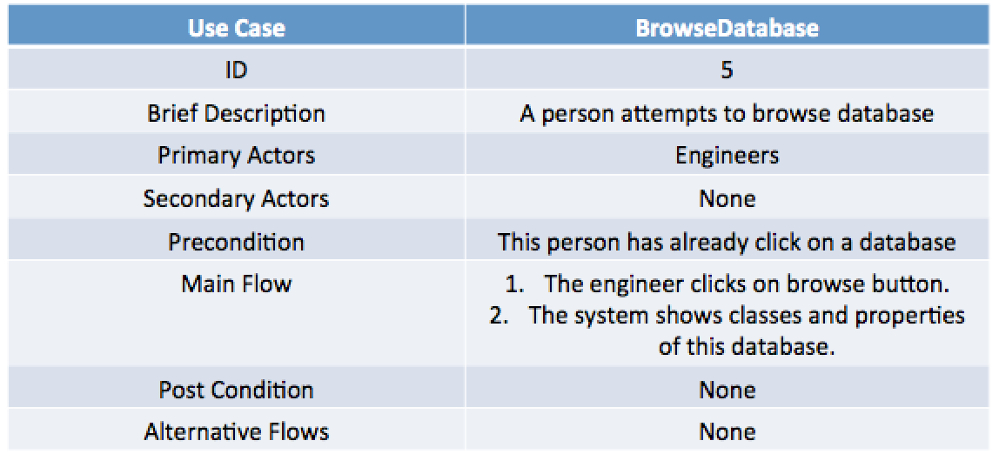
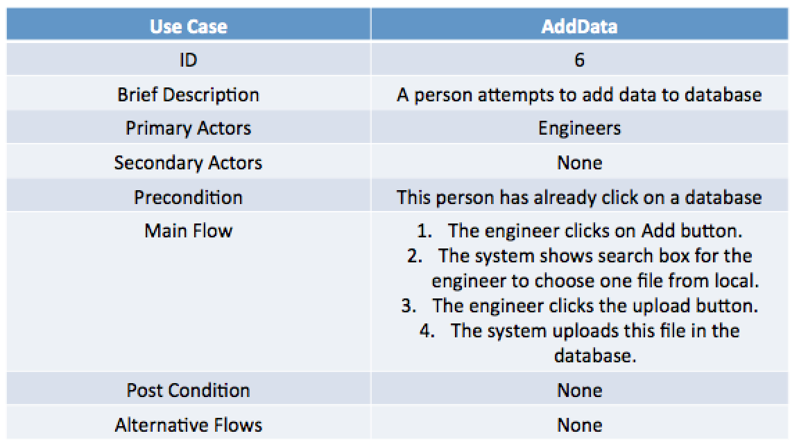

Project Background
We aim to improve the tooling available for working with graph databases and the semantic web. Add stuff here
Client

Our project is presented by Bosch, which is a famous German industrial company focused on advanced technologies. Bosch works in "Industry 4.0" and each of the devices they work on, stores its data in a dynamic, graph-based database in RDF format. It is for this RDF database that they want us to build a GUI. The have provided us a REST API which queries their RDF database. We need to use the REST API to build the GUI. We keep in contact with the client through weekly client meetings conducted using Skype for Business. Our main points of contact are Dr. Daniel Ewert(Bosch) and Steffen Stadtmüller(Bosch).
Problem Statement
Develop a GUI to help users navigate, query and get insights from
RDF databases without needing to have previous knowledge of technologies like SPARQL.
Our project is to build a GUI
which will communicate actions and manipulations to an underlying REST API
which they have built for us. This API sends SPARQL queries to their RDF database.
What the database sends back is converted to JSON. We have to visualise their graph based database,
with attributes and relationships, visually so that it becomes easier for developers to understand
the database and deduce patterns and relationships.
We will need to understand how RDF works to be able to use the API and create the GUI.
Requirements
Functional Requirements
| ID | Requirement | Category | Priority | Completed |
|---|---|---|---|---|
| F1 | The GUI shall list all classes in the database | Class | Must | No |
| F2 | For each class, the GUI shall list all the nodes that belong to this class | Class | Must | No |
| F3 | For each property, the GUI shall list all the nodes that use that property | Property | Must | No |
| F4 | The GUI shall list all properties in the database | Property | Must | No |
| F5 | The GUI shall list all properties in the database | Property | Must | No |
| F6 | A user shall be able to select multiple properties that interest him | Propery | Shall | No |
| F7 | Shall display all nodes a particular node is connected to | Node | Shall | No |
| F8 | Way of accessing multiple nodes in the structure (like sub-graphs) | Node | Shall | No |
| F9 | Graphical structure to show you where you are | Navigation | Shall | No |
Non-Functional Requirements
| ID | Requirement | Category | Priority | Completed |
|---|---|---|---|---|
| NF1 | The GUI shall be user friendly | GUI | Should | No |
| NF2 | The GUI shall look nice | GUI | Should | No |
| NF3 | Prevent the user from getting lost | GUI | Should | No |
| NF4 | The GUI must provide insights on the data and how it connects to everything | GUI | Should | No |
Use Cases


 


